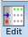
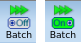
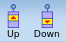
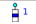
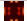

Run Control Pane
To access: RET Selection Window
The Run Control pane displays the status of currently running sessions and allows you to quickly start multiple runs.
Description
The Run Control pane consists of three primary areas:
A toolbar at the top, with buttons described in the table following.
A list of sessions. Use it to run point tools individually, start or pause a run, and view the source map of the optimized source. The active session is in bold.
A status indicator at the bottom.
Queued refers to sessions that are scheduled to run, but not yet started.
Waiting refers to sessions that have moved to the dispatcher but not yet launched.
Executing refers to the sessions that have been dispatched and are currently performing calculations.
Objects
Object |
Description |
|---|---|
|  | Opens the Commands dialog box. Commands shows the template file used for creating Tcl scripts to run in batch mode. The lower portion lists the setup variables and current values. You can make changes in this dialog box and save for later use. |
Opens the Run Configuration dialog box, which is displayed when starting a run. See Step 6 of “Cloning Sessions and Running Efficiently” for a description of the settings. |
|
 |
Toggles batch run mode. In batch run mode, you can select multiple sessions to launch simultaneously. Once they are launched, batch run mode turns off again. |
 |
Schedule a queued session. Select a queued session in the session pane then click one of these to move the session up or down the queue. These buttons are not active for sessions not in the queue. |
Opens the Job Notification Configuration dialog box. Use this dialog box to set up email notifications when certain events occur with running sessions. The feature requires /usr/sbin/sendmail on the server on which RET Selection is running in order to send the email. Note:
Email is only sent when the RET Selection window has been started. To ensure messages are sent close to the event time, leave the RET Selection window iconified while running Calibre WORKbench. |
|
Controls the sessions displayed in the session pane. Use to show only the sessions attached to a particular layout. |
Objects |
Description |
|---|---|
The green arrow indicates a session is ready to run. Click the arrow to start executing the session. |
|
The checkbox only appears in Batch Run mode. Selected boxes are run when you right click the Batch run button at the bottom. |
|
The hourglass icon indicates a session has been sent to the dispatcher but has not yet launched. A session only displays this icon briefly. |
|
 |
The blue-banded icon with a number beside it indicates the session is queued. The number indicates its position in the queue. The example here is from the first session in the queue (position 1). It will run next. |
|
The green dot over an empty bar indicates a session is running. Use the red square to stop the session. |
The red square with lines radiating out indicates a session is stopped. |
|
The green check indicates a completed run. |
|
The red circle with an X indicates that a session exited with an error. The error is listed near the end of the session log. To open the session log, right-click and select or Job Log. |
|
 |
The small pictures are thumbnail images of the optimized source. (The appearance depends on the style you set in .) Click on the image to open the source view. |

Usage Notes
The Run Configuration Setup can be used to create a remote file. If the dispatcher mode is off or it is set to “No remote file, no remote script”, the SMO setup pane’s Parallel PW is ignored.
The Job Notification feature requires that the machine upon which the RET Selection GUI was opened also has /usr/bin/sendmail. When sendmail is not available at that location, email is not sent.